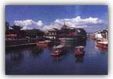

| 雄峰俊岭 | 滔滔大河 | 都市盛景 | 互动 | |||||
|
秦淮河是扬子江的一条支流，全长约110公里，是南京地区的主要河道。这条河历史上很有名气，是著名的游览胜地，但到了近代，由于战乱等原因,河水日渐污浊,两岸建筑多被毁坏，昔日繁华景象已不复存在。1985年以后，江苏省、南京市拨出巨款对这一风光带进行修复，秦淮河又再度成为我国著名的游览胜地。 集古迹、园林、画舫、市街和民俗于一体. 早在六朝时代，秦淮河及夫子庙一带已是繁华的地区，十里秦淮两岸是贵族世家聚居之地，也是文人墨客荟萃的地方。隋唐之后，一度冷落。明清又再度繁华，富贾云集，青楼林立，画舫凌波，成为江南佳丽之地。 秦淮风光最著名的是盛行于明代的灯船。河上的船，不论大小，都一律悬挂着彩灯，凡游秦淮河的人，必乘灯船为快。朱自清在他那篇著名的散文《桨声灯影里的秦淮河》，对此就有很好的叙述。  经过修复的秦淮河风光带，以夫子庙为中心，秦淮河为纽带，包括瞻园、夫子庙古建筑群、白鹭洲、中华门城堡，以及从桃叶渡至镇淮桥一带的秦淮水上游船和沿河景观，可谓集古迹、园林、画舫、市街、河房厅和民俗民风于一体的旅游线，极富情趣和魅力。 主要景点 瞻园 最初是明朝开国功臣徐达的王府西花园，后来又为清朝藩台衙门的花园。太平天国时为东王杨秀清的王府。园子的规模不大，但布局典雅，曲折幽深，称得上是江南园林中的玲珑佳品。其主要特色是三座各具风姿的假山。 夫子庙 即是孔庙，始建于宋，位于秦淮河北岸的贡院街旁。夫子庙以庙前的秦淮河为泮池，南岸的石砖墙为照壁，全长110米，是全国照壁之最。每年农历正月初一至十八，这里举行夫子庙灯会，热闹非常。1985年，南京市政府修复了夫子庙古建筑群。还改建了夫子庙一带的市容，许多商店、餐馆、小吃店门面都改建成明清风格，并将临河的贡院街一带建成古色古香的旅游文化商业街；夫子庙即恢复了旧观，又展现了新容。夫子庙建筑群由孔庙、学宫、江南贡院荟萃而成，是秦淮风光的精化。 李香君故居 又称媚香楼，是一两层高的砖木结构民居。李香君是清初戏剧家孔尚任名著《桃花扇》中的秦淮名妓，传说实有其人。重修后的故居，陈列有关历史资料及明式家具。 |
||||